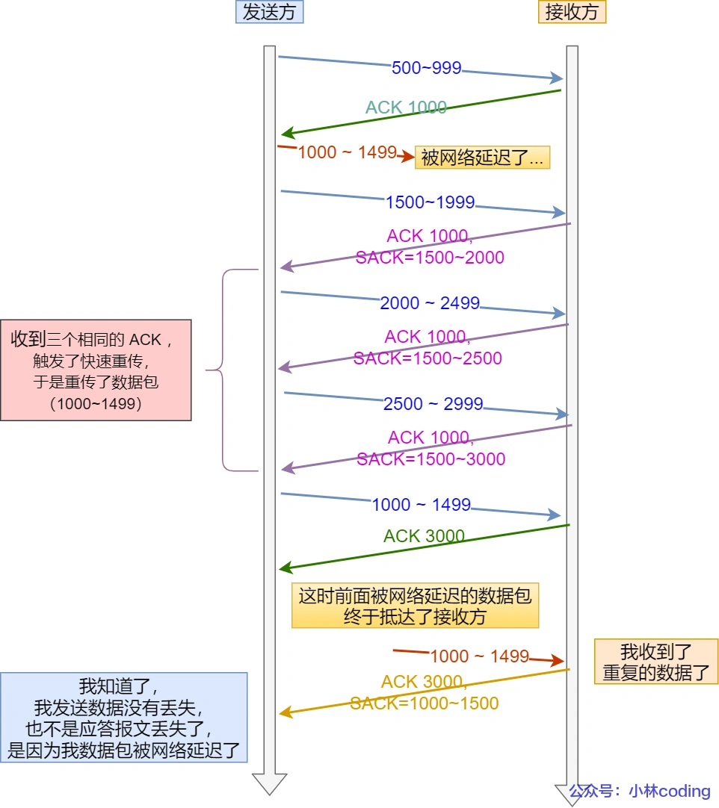

1 TCP基本概念
1.1 TCP介绍
在TCP/IP网络分层模型中，网络层即IP层是不可靠的，它不保证网络包是否交付，不保证网络包是否按序交付，也不保证网络包中的数据完整性，而是交由上层的传输层协议TCP来负责保证网络数据包传输的无损坏、无间隔、非冗余和按序。
TCP是面向连接的、可靠的、基于字节流的传输层通信协议：
- 面向连接：一对一的关系才能连接，而不是UDP那样可以一个主机同时向多个主机发送消息。
- 可靠：无论网络链路中出现了怎样的变化，TCP都保证报文一定到达接收端。
- 基于字节流：用户消息通过TCP协议传输时，消息可能会被操作系统分组成多个TCP段，如果接收方不知道消息的边界，就无法完整读取一个有效消息；TCP报文是有序的，前一个TCP报文没有到达时即使接收端收到后面的报文，也不会向上传输给应用层程序；对于重复收到的报文，TCP会自动丢弃。
1.2 TCP连接
RFC对连接的定义如下：
- Connections: The reliability and flow control mechanisms described above require that TCPs initialize and maintain certain status information for each data stream. The combination of this information, including sockets, sequence numbers, and window sizes, is called a connection.
因此按照要求，一个TCP连接是需要客户端与服务器端达成上述三个信息的共识：
- Socket：由IP地址和端口号组成。
- 序列号：用来解决包乱序问题。
- 窗口大小：用来做流量控制。
在HTTP篇提到过，要确定一个TCP连接，需要四元组：
- 源IP地址
- 源端口
- 目的IP地址
- 目的端口
其中源IP和目的IP（32位）在IP头部中，通过IP协议发送给对方主机；源端口和目的端口（16位）在TCP头部中，目的是告诉TCP协议应该把报文发给哪个进程。
1.3 TCP头部格式


序列号：用来解决网络包乱序问题。在建立连接时由计算机生成的随机数作为其初始值，通过SYN包传给接收端主机，每发送一次数据，就累加一次该数据字节数的大小，比如A向B发送了一段报文序列号是301，携带了100字节数据，下一个A要发送的报文序列号就是401。
确认应答号：用来解决丢包问题。指接收端下一次期望收到的数据的序列号，发送端收到这个确认应答后可以认为这个序号之前的数据包都已经被正常接收。比如B收到了A发过来的序列号是301携带了100字节数据的报文，表明B正确收到了序列号小于等于400的数据，下一个期望收到的报文序列号应该是401，那么B给A回复的确认报文中填入的确认应答号就是401。
控制位：
ACK：为1时，确认应答号字段变为有效。TCP规定除了最初建立连接的SYN包之外该位必须设置为1。RST：为1时，表示TCP连接中出现异常必须强制断开连接。SYN：为1时，表示希望建立连接，并在其序列号字段进行序列号初始值的设定。FIN：为1时，表示今后不再有数据发送，希望断开连接。当通信结束希望断开连接时，通信双方的主机之间可以互相交换FIN位为1的TCP段。
1.4 TCP与UDP
相比较于TCP，UDP协议真的很简单，它没有复杂的控制机制，基于IP提供无连接的通信服务，头部也只有8个字节：

- 源端口和目的端口：告诉UDP应该把报文发送给哪个进程。
- 包长度：保存UDP首部长度+数据长度的总和。
- 校验和：为了提供可靠的UDP首部和数据而设计，防止收到在网络传输中受损的UDP包。
TCP和UDP的主要区别有：
- 连接：TCP面向连接，传输数据前需要先建立连接；UDP不需要连接，想传就传。
- 服务对象：TCP是一对一的两点服务，一条连接智能有两个端点；UDP支持一对一、一对多、多对多的交互通信。
- 可靠性：TCP是可靠交付数据的，数据可以无差错、不丢失、不重复、按序到达；UDP是尽最大努力交付，不保证数据一定到达。
- 拥塞控制、流量控制：TCP有拥塞控制和流量控制机制，保证数据传输的秩序和安全；UDP没有这些机制，即使网络非常拥堵也不影响UDP的发送速率。
- 首部开销：TCP的首部比较长，会有一定开销，没有使用可选字段时就已经20个字节；UDP首部固定不变的8个字节，开销较小。
- 传输方式：TCP是流式传输，没有边界，但保证顺序和可靠；UDP是一个包一个包发送，有边界，但可能会丢包或乱序。
- 分片方式：TCP的数据大小大于MSS时会在传输层进行分片，目标主机收到后也同样在传输层组装TCP数据包，中途如果发生丢失只需要重传这个分片；UDP的数据大小大于MTU时会在IP层分片，目标主机收到后在IP层组装完数据再传给传输层。
TCP和UDP的应用场景：
TCP面向连接，能保证数据的可靠交付，常用于：
- FTP文件传输
- HTTP/HTTPS
UDP面向无连接，随时可以发送数据，而且UDP本身处理简单又高效，常用于：
- 包总量较少的通信，如DNS、SNMP
- 视频、音频等多媒体通信
- 广播通信
为什么TCP首部有Header Length字段，而UDP没有？
因为TCP存在可选字段Options，导致首部长度不固定，UDP的首部确实固定的8字节，不需要单独的字段去记录。
为什么UDP头部有包长度Length字段，而TCP没有？
TCP数据长度 = IP总长度 - IP首部长度 - TCP首部长度
IP总长度和IP首部长度在IP首部已知，TCP首部长度在TCP首部已知，所以就可以求得TCP数据长度。
UDP也是基于IP层，同样可以通过这个公式计算，因为为了网络设备硬件设计和处理方便，首部长度需要是4字节的整数倍，所以才设计了这个冗余字段。
1.5 TCP分段

MTU：Maximum transmission unit，一个网络包的最大长度，以太网中一般为1500字节。MSS：Maximum segment size，除去IP和TCP头部后一个网络包所能容纳的TCP数据最大长度。
如果直接把TCP报文（头部+数据）交给IP层进行分片，当IP层有一个超过MTU大小的TCP报文要发送时，就会进行分片，保证每一个分片小于MTU，在目标主机的IP层组装后，再向上传给TCP传输层。如此操作的隐患在于，如果一个IP分片丢失，整个IP报文的所有分片都需要重传。这是因为IP层本身没有超时重传机制，所以丢失后只能重新发送完整的IP报文。
实际网络中传输层TCP会负责超时重传，当接收方发现TCP报文的某一段丢失后，不会响应ACK给发送方，发送方的TCP超时后，就会只重发这个TCP报文段。所以为了达到最佳的传输性能，TCP协议在建立连接的时候通常会协商双方的MSS值，当TCP发现数据超过MSS时，就会进行分段，分段后形成的IP数据报长度肯定也比MTU要小，就不用IP分片了。
经过TCP层分段后，如果下一个TCP分段丢失，重传时就以MSS为单位，不用再重传整个TCP报文了。
1.6 为什么说TCP面向字节流？
上文说到TCP是面向字节流的协议，UDP是面向报文的协议，根本原因是操作系统对TCP和UDP协议发送方的处理机制不同。
对于UDP，当用户消息通过UDP协议传输时，操作系统不会对消息进行拆分，组装好UDP头部后就直接交给网络层来处理，所以发出去的UDP报文中的数据部分就是完整的用户用户消息，因此每个UDP报文就是一个用户消息的边界，接收方在接收到UDP报文后，每读一个报文就是一个完整的用户消息。
为了区分多个不同的UDP报文，操作系统每收到一个UDP报文就将其插入到队列里，队列里的每一个元素就是一个UDP报文，这样当用户调用recvfrom()让系统读取数据时，就会从队列里取出一个数据元素然后从内核里拷贝给用户缓冲区。
而对于TCP，当用户通过TCP协议传输时，消息可能会被操作系统分组成多个TCP报文段，一个完整的消息被拆分，这时接收方的程序如果不知道发送方发送的消息长度，即不知道消息的边界话，是无法读取出一个有效的用户消息的，因为此时一个TCP报文段不代表一个完整的用户消息。
例如发送方发送「Hello, 」和「World!」这两个消息，在发送端调用send()后，数据并不是立即就从网络上发出，而只是从应用程序拷贝到了操作系统内存协议栈中。而真正发送的时机则要取决于发送窗口、拥塞窗口以及当前内存缓冲区的大小等条件，因此每次send不代表这个完整的消息就会被发出。因此刚刚对于用户来说的两个消息在发送的时候很可能被重组，比如第一次发送了「Hell」，第二次发送了和「o, World!」，因此不能认为一个用户消息对应一个TCP报文段。
正是因为分段的存在，TCP传输没有明确的边界，方式就像进行流式文件读写一样，所以才说TCP是面向字节流的协议。
如上述例子的情况，当两个消息的部分内容被分配到同一个TCP报文段时，就发生了TCP粘包，如果接收方不能明确消息边界，就无法读取有效消息。一般会由应用程序来解决这个问题，方式主要有：
- 固定长度的消息：最简单的方法，固定每个消息长度，当接收方接收到这个长度大小的数据就能识别为一个有效消息，但是不灵活，不常用。
- 特殊字符作为边界：在两个用户消息之间插入特殊的标识字符，接收方每读取到一个这样的字符，之前读取的内容就能被组装为一个完整消息。比如HTTP设置的回车符、换行符。当然，如果消息中也有这个字符，就需要进行字符转义。
- 自定义消息结构：定义消息结构主要是构建包头，比如可以让包头长度固定，然后一个字段值用来说明紧跟着的数据部分长度有多少（类似UDP的首部），这样接收方就能通过解析包头读取正确长度的数据组装成消息。
2 TCP连接建立
2.1 TCP三次握手
TCP是面向连接的，使用TCP必须先建立连接，建立连接是通过三次握手来实现的。

- 第一次握手
一开始，客户端和服务端都处于CLOSED状态，服务端先主动开始监听某个端口，处于LISTEN状态。
客户端希望建立连接，发送三次握手第一个报文——SYN报文：
- 随机初始化序列号
client_isn，将此序号置于TCP首部的Sequence number字段。 - 把TCP首部的
SYN标志位置为1，表示此报文为SYN报文。 - 把这个SYN报文发送给服务端，此报文不包含应用层数据，仅表示向服务端发起连接。
- 之后客户端处于
SYN-SENT状态。

- 第二次握手
服务端收到客户端的SYN报文后：
- 也随机初始化自己的序列号
server_isn，将此序列号填入TCP首部的Sequence number字段。 - 把TCP首部确认应答号字段
Acknowledgement Number填入client_isn + 1，接着把SYN和ACK标志位置为1。需要注意的是，此时尽管客户端没有发送任何有效数据，确认应答号还是被加1，这是因为接收的包中SYN或FIN标志位置为1的缘故。 - 把SYN+ACK报文发送给客户端，这个报文也不包含应用层数据，之后服务端处于
SYN-RCVD状态。

- TCP第三次握手
客户端收到服务端的SYN+ACK报文后，还要向服务端回应最后一个应答报文即ACK报文：
由服务端报文的确认应答号为
client_isn + 1可知，之前自己发送的序列号为client_isn的SYN报文已被收到，尽管没带上实质性数据，因为之前报文SYN标志位为1，依然要将上文序列号自增1，即client_isn + 1填入TCP首部的Sequence number字段。将TCP首部
ACK标志位置为1。Acknowledgment Number字段填入server_isn + 1，理由同上。把该报文发送给服务端，这次报文可以携带应用层数据，之后客户端处于
ESTABLISHED状态。

服务器收到客户端的应答报文后，也进入ESTABLISHED状态。此时双方连接建立完成，客户端和服务端可以互相通信发送数据了。
2.2 为什么是三次握手，不是两次、四次？
首先明确，TCP连接的含义是：用于保证可靠性和流量控制维护的某些状态信息，这些信息的组合，包括Socket、序列号和窗口大小，称为连接。所以要握手要达到的目的就是初始化Socket、序列号和窗口大小从而建立连接。
可以从三方面分析为什么是三次握手：
- 三次握手才可以阻止重复历史连接的初始化（主要原因）。
- 三次握手才可以同步双方的初始序列号。
- 三次握手才可以避免资源浪费。
- 避免历史连接
RFC 793指出TCP连接使用三次握手的首要原因：
- The principle reason for the three-way handshake is to prevent old duplicate connection initiations from causing confusion.
即为了防止旧的重复连接初始化造成混乱。
Ex. 客户端发送第一次握手SYN报文（seq = 90），但是网络阻塞，服务端没收到；因此客户端再次尝试建立连接，发送新的SYN报文（seq = 100，注意不是重传SYN，重传SYN的序列号和之前应该一样），三次握手可以阻止历史连接导致的混乱，如图所示：

如果是两次握手，就无法阻止历史连接。因为被动发起方（服务端）没有中间状态给主动发起方（客户端）来阻止历史连接，导致被动发起方可能建立一个历史连接，造成资源浪费。
两次握手情况下，第一次握手客户端给服务端一个SYN报文，服务端收到后直接进入ESTABLISHED状态，并在给客户端的SYN+ACK报文中带上应用数据，但是客户端通过上下文判断这不是我要的确认应答号，此次连接是历史连接，直接回复RST报文来断开连接，服务端只有在收到这个报文后才能大彻大悟这原来是历史连接，不得不选择断开，之前传的数据也白传了，这就造成了资源的浪费。

为了让服务端在发送数据前即建立连接之前就阻止掉历史连接，才需要三次握手，这样就不会造成资源浪费。
- 同步双方初始序列号
TCP协议的通信双方都必须维护一个序列号Sequence Number，序列号是可靠传输的关键，通过序列号：
- 接收方可以去除重复数据；
- 接收方可以根据数据包的序列号按序接收；
- 可以标识发出去的包中，哪些已经被成功接收（通过ACK报文中的确认应答号）。
因此在握手过程中，客户端发送携带自己初始序列号的SYN报文后需要服务端回复ACK应答报文，表示客户端的SYN报文已被服务端成功接收，同样服务端发送自己初始序列号给客户端的时候，也要得到客户端的应答回应。如此一来一回，才能确保双方的初始序列号能被可靠地同步。

四次握手也可以可靠同步双方的初始序列号，由于第二步和第三部可以直接优化成一步，所以就成为三次握手。
而两次握手只能保证一方的初始序列号被对方成功接收，没办法保证双方的初始序列号都被确认接收。
- 避免资源浪费
如果只有两次握手，客户端第一次的SYN报文在网络中阻塞，迟迟收不到ACK报文，就会重新发送SYN，而服务端只要收到一次SYN就会主动建立一个连接，这样服务端就会在收到客户端之前阻塞的SYN后建立多个冗余无效的连接，或者在客户端已经关闭情况下，如果服务端收到了之前阻塞的SYN仍然会坚持不懈建立新的连接，这些连接都是不必要的资源浪费。

2.3 为什么ISN要随机生成
初始序列号（Initial Sequence Number）在每次TCP连接建立时都是随机生成，即要求每次连接都不一样，这是为了：
- 防止历史报文被下一个相同四元组的连接接收（主要原因）。
- 安全性考虑，防止黑客伪造的相同序列号的TCP报文被对方接收。
假设每次建立连接，客户端和服务端的初始化序列号都从0开始：

- 客户端和服务端建立了TCP连接，但是客户端发过来的数据包被阻塞，服务端的进程重启，发起RST报文断开当前连接；
- 紧接着客户端和服务端重新建立了与上一个四元组相同的连接；
- 新连接建立后，上一个连接中被网络阻塞的包到达了服务端，因为序列号正好在服务端的接受窗口内，所以数据包会被服务端正常接收，造成数据错乱。
而如果每次连接的初始化序列号都不一样，很大程度能避免因为历史报文序列号在接收窗口内而被错误接收的问题。
那么ISN是如何随机产生的呢？
RFC 793提到ISN随机生成算法：ISN = M + F(localhost, localport, remotehost, remoteport)
- M是一个计时器，这个计时器每隔4微秒加1。
- F是一个Hash算法，根据四元组生成一个随机数值。要保证Hash算法不能被外部轻易推算得出，用MD5算法是一个比较好的选择。
可以看到，随机数是会基于时钟计时器递增的，基本不可能会随机成一样的初始化序列号。
2.4 握手中的故障处理
2.4.1 如果第一次握手丢失，会发生什么？
客户端想要和服务端建立连接，进行第一次握手发送的报文是SYN报文，然后进入SYN_SENT状态。如果在这之后客户端迟迟无法收到服务端的第二次握手报文SYN-ACK报文，就会触发超时重传机制，重传SYN报文。
不同版本操作系统的超时时间不同，这个时间写死在了OS的内核里。
而对于SYN报文重传的次数，Linux里由tcp_syn_retries内核参数控制，可以自定义，默认是5。第一次超时重传在1s后，第二次2s后，第三次4s后，第四次8s后，第五次16s后，即每次超时时间是上次的2倍。
第五次超时重传后客户端会继续等待32s，如果仍然没有收到回应的ACK，客户端就不再重传，直接断开TCP连接。
2.4.2 如果第二次握手丢失，会发生什么？
服务端收到客户端的第一次握手SYN报文后，会回复SYN-ACK报文，即第二次握手，然后服务端进入SYN_RCVD状态。第二次握手其实融合了两个步骤：
- 通过ACK向客户端确认，表示我收到了你的SYN报文；
- 生成ISN并给客户端发送SYN，表示我也需要你确认我的SYN报文。
所以第二次握手丢失就会在客户端和服务端分别产生行为：
- 客户端没有收到ACK，触发超时重传，重新发送SYN报文；
- 服务端没有收到第三次握手客户端对自己SYN的ACK，于是也触发超时重传，重新发送SYN-ACK报文。
Linux中SYN-ACK报文的最大重传次数由tcp_synack_retries内核参数决定，默认值也是5。
2.4.3 如果第三次握手丢失，会发生什么？
客户端收到服务端的SYN-ACK报文，然后回复第三次握手ACK报文，然后进入ESTABLISH状态。
因为第三次握手是对服务端SYN的确认，所以丢失后会触发服务端的超时重传机制，重新发送SYN-ACK报文，直到收到第三次握手报文或达到最大重传次数关闭连接。
由上文可知，ACK报文是不会重传的，当对方发送的ACK丢失了，只能由本方重传SYN报文。
2.5 SYN攻击
TCP连接的建立需要三次握手，假设攻击者短时间伪造不同的IP地址即不同的四元组来向服务器发送SYN报文，服务端每收到一个SYN报文就回复ACK+SYN报文并进入SYN_RCVD状态，但是这个报文却并不会得到伪造IP的ACK应答，久而久之服务端的半连接队列就被占满，使得服务器不能正常为用户服务。
3 TCP连接断开
3.1 TCP四次挥手

- 第一次挥手
- 客户端打算关闭连接，发送一个TCP首部
FIN标志位为1的报文，即FIN报文，之后客户端进入FIN_WAIT_1状态。
- 第二次挥手
- 服务端收到该报文后，向客户端发送ACK应答报文，接着进入
CLOSE_WAIT状态。 - 客户端收到服务端的ACK报文后进入
FIN_WAIT_2状态。
- 第三次挥手
- 服务端在处理和发送完数据后，也向客户端发送FIN报文，之后服务端进入
LAST_ACK状态。
- 第四次挥手
- 客户端收到服务端的FIN报文后，也回一个ACK应答报文，之后进入
TIME_WAIT状态。 - 服务端收到ACK应答报文后，进入
CLOSED状态，至此服务端已经完成连接的关闭。 - 客户端在经过2MSL（Maximum Segment Lifetime, the longest time (in seconds) that a TCP segment is expected to exist in the network）的时间后自动进入
CLOSED状态，至此客户端也完成连接的关闭。
3.2 为什么是四次挥手？
关闭连接时，客户端向服务端发送FIN报文，仅仅表示客户端不再给服务端发送数据了，但是还能接收数据。服务端收到FIN报文后，先回复ACK应答报文，仅仅表示服务端确认了客户端的FIN，但服务端自己可能还有数据需要处理和发送。
等到服务端没有数据要发送后，再发送FIN报文给客户端表示同意现在关闭连接了。客户端收到后自然也要回复ACK应答报文，表示自己也不再接收数据，连接彻底关闭。
正是因为服务端在收到客户端的FIN后，自身可能还有数据需要处理和发送，不能马上也关闭，所以才将ACK和FIN分开发送，从而比建立连接时的三次多了一次。
3.3 挥手中的故障处理
3.3.1 如果第一次挥手丢失，会发生什么？
客户端作为主动关闭方时，调用close函数，然后向服务端发送FIN报文，试图断开连接，然后进入FIN_WAIT_1状态。如果之后能及时收到服务端的ACK，会进入FIN_WAIT_2状态。
如果第一次挥手丢失，客户端迟迟收不到来自被动关闭方的ACK，就触发超时重传机制，重发FIN报文，重发次数由tcp_orphan_retries参数控制。当重发次数超过最大次数，就不再发送FIN报文，直接进入CLOSED状态。
3.3.2 如果第二次挥手丢失，会发生什么？
服务端收到客户端的FIN报文后，内核会自动回复一个ACK确认报文，然后进入CLOSE_WAIT状态。
与握手过程一样，ACK报文是不会重传的，所以服务端的ACK确认报文丢失与上一个情况的结果一样，客户端因为迟迟收不到ACK而重传FIN报文，直到收到或重传次数达到上限为止。
3.3.3 如果第三次挥手丢失，会发生什么？
服务端进入CLOSE_WAIT状态后，内核没有权利代替进程关闭连接，必须由进程主动调用close函数来触发服务端发送FIN报文，然后进入LAST_ACK状态，等待客户端的ACK来确认连接关闭。
如果这个FIN报文丢失，与客户端类似，服务端也重发FIN报文，重发次数也由服务端的tcp_orphan_retries参数控制。
3.3.4 如果第四次挥手丢失，会发生什么？
客户端收到服务端第三次挥手的FIN报文后，回复ACK应答报文，然后进入TIME_WAIT状态。
Linux下，TIME_WAIT状态会持续2MSL，然后进入CLOSED状态。如果ACK没有到达服务端，和上一个情况类似，服务端还是处于LAST_ACK状态，开始重传FIN报文，直到收到确认或达到重传次数上限。
3.4 TIME_WAIT状态
3.4.1 为什么等待时间是2MSL？
主动发起方进入TIME_WAIT状态后会等待2MSL然后自动进入CLOSED状态，正式完成连接关闭，为什么等待时间是2MSL呢？
MSL是Maximum Segment Lifetime，指任何TCP报文在网络中存在的最长时间，超过这个时间的报文将被丢弃。
IP头部中也有一个TTL（Time to live）字段，也被称作Hop limit，表示IP数据报可以经过的最大路由数，每经过一个处理它的路由器这个值就要减1，减为0时这个数据报就被丢弃，同时发送ICMP报文通知源主机。
MSL与TTL的区别在于：
- MSL单位是时间，TTL是经过的路由数。所以MSL应该要大于等于TTL消耗为0的时间，确保报文能在IP层自然消亡。
- TTL的值一般是64，Linux将MSL设置为30s，意味着Linux认为数据报经过64跳的时间不会超过30s，如果超过则报文已经消亡。
设置TIME_WAIT状态等待时间为2MSL的原因主要是考虑到网络中还存在发送方发送出来的报文，这些报文需要先到达接收方，然后接收方可能还会响应这些报文，一来一回最多就是2MSL时间。
比如，假设主动关闭方收到了被动关闭方的FIN报文，然后回复ACK，但是这个ACK在网络中丢失，所以被动关闭方触发超时重传FIN报文，主动关闭方再次接收到FIN后，然后再次发送ACK，这个过程最多就是2MSL的时间。而且TIME_WAIT状态是从主动关闭方收到FIN报文回复ACK后开始计时的，此时2MSL的倒计时还将被重置，所以2MSL的设置事实上允许了至少一次报文的丢失。
因为极其糟糕的网络中发生丢包概率都很小，更多的MSL设置就没有性价比了。
因为Linux系统的MSL是30s，所以TIME_WAIT的时间也就被固定为60s。如果需要修改这个值，则需要修改Linux内核代码中的TCP_TIMEWAIT_LEN字段然后重新编译内核。
3.4.2 为什么需要TIME_WAIT状态？
连接关闭的主动发起方才有TIME_WAIT状态，之所以需要这个状态，主要原因有两个：
- 防止历史连接中的数据，被后面相同四元组的连接错误接收。
首先，在TCP中序列号（seq）和初始序列号（ISN）都不是无限递增的。序列号是32的无符号整数，传输数据到达4G之后会循环回到0；初始序列号是32位的计数器，计数器的数值每4微秒+1，循环一次需要4.55小时。
因为序列号和初始序列号在到达循环边界后都会回绕为初始值，所以无法根据序列号来判断当前数据是新连接还是旧连接数据。
假设没有TIME_WAIT等待时间或等待时间过短，被延迟的数据报抵达后就会被错误接收。

- 服务端在关闭连接之前发送「seq=301」的报文，被网络延迟；
- 接着服务端以相同的四元组重新打开连接，前面被延迟的「seq=301」报文此时抵达客户端，并且序列号刚好在客户端接收窗口内，客户端就正常接收了这个报文，但是这个报文是历史连接遗留的报文，于是会导致数据错乱等严重问题。
因此TCP设计了TIME_WAIT状态等待2MSL，这个时间足以让两个方向上的数据报都被丢弃，使得即将被关闭连接的数据包在网络中自然消失，再出现的数据包一定都是新建立连接所产生的。
- 保证连接的被动关闭方能正确关闭连接。
如前文所述，2MLS的等待时间允许了至少一次ACK报文的丢失，被动关闭方超时重传的FIN报文能够在等待时间内被主动关闭方接收，然后重新发送ACK报文，并重置等待时间。
假设客户端没有TIME_WAIT状态，发完最后一次ACK报文直接进入CLOSED状态，如果该ACK报文丢失，服务端重传FIN报文，这时客户端已经关闭，只会回复RST报文，服务端收到这个报文并将其解释为一个错误（Connection reset by peer），相当于异常终止连接了。
3.4.3 TIME_WAIT过多会有什么危害？
TIME_WAIT状态过多会造成两种危害：
- 内存资源占用。
- 端口资源占用。
主动发起方（客户端）主要受端口资源限制：一个TCP连接至少消耗客户端一个本地端口，而端口资源是有限的，一般可以开启的端口为32768～61000（一般是系统自动分配），如果连接TIME_WAIT状态过多，占满了所有端口资源，就无法创建新的连接了。
被动发起方（服务端）主要受系统资源限制：一个四元组表示一个TCP连接，因此服务端监听的一个端口可以和很多客户端建立连接，不会因为TCP连接过多导致端口资源受限。但是TCP连接过多会导致系统资源比如文件描述符、内存资源、CPU资源、线程资源等被占用太高，无法有效进行服务。
3.5 TCP keepalive
对于已经建立的连接，TCP有一个保活机制keepalive，这个机制的原理是：
- 定义一个时间段，在这个时间段内，如果没有任何相关活动，TCP保活机制会开始作用，每隔一段时间间隔，发送一个探测报文，该探测报文数据很少，如果连续几个探测报文都没有得到响应，则认为当前TCP连接已死，系统内核将错误信息通知给上层应用程序。
Linux内核可以有对应的参数设置保活时间、保活探测次数和保活探测的时间间隔：
net.ipv4.tcp_keepalive_time=7200
net.ipv4.tcp_keepalive_intvl=75
net.ipv4.tcp_keepalive_probes=9- tcp_keepalive_time=7200：保活时间7200s，即2h，2h内没有任何连接相关的活动就开始保活机制。
- keepalive_intvl=75：每次探测时间间隔75s。
- keepalive_probes=9：如果9次探测都没有反应，则认为对方不可达，然后中断本地连接。
这些时间的总和是2h11m15s，即在Linux中至少经过这么久的时间才会发现一个死亡连接。
应用程序如果要使用TCP保活机制需要通过socket接口设置SO_KEEPALIVE选项才能生效，没有设置则无法使用。
保活机制开启后，可能出现的情况有：
- 对端程序工作正常：TCP保活探测报文发送给对端，对端正常响应，保活时间被重置。
- 对端程序崩溃且已经重启：对端收到保活探测报文后可以响应，但是因为没有连接有效信息，会回复RST报文，很快就能发现TCP连接已被重置，因此直接中断当前连接。
- 对端程序崩溃或其他原因导致报文不可达：保活探测报文发送后犹如石沉大海，没有响应，达到探测次数上限后，TCP报告当前连接已经死亡。
TCP保活机制的检测时间比较长，可以自己在应用层实现一个心跳机制：
- 比如Web服务端都会提供
keepalive_timeout参数，用来指定HTTP长连接的超时时间，比如如果设置60s，Web服务软件就会启动一个定时器，如果客户端完成一个HTTP请求后60s都没有发起新的请求，定时器时间一到，就会触发回调函数来释放当前连接。
4 TCP的Socket编程
4.1 Socket实现TCP连接过程

针对TCP，Socket编程使用的主要过程有：
- 服务端和客户端初始化
socket，得到文件描述符； - 服务端调用
bind，绑定在对应的IP地址和端口； - 服务端调用
listen，进行监听； - 服务端调用
accept，等待客户端连接； - 客户端调用
connect，向服务端的IP地址和端口发起连接请求； - 服务端
accept返回已完成连接用于传输的socket文件描述符； - 客户端调用
write写入数据，服务端调用read读取数据； - 客户端断开连接时，调用
close； - 服务端
read读取数据时会读取到EOF，处理完数据后，也调用close，表示连接关闭。
注意，用来监听的socket和真正用来传输数据的socket是两个，一个叫监听socket，一个叫已完成连接socket。
连接建立后双方通过read和write函数读写数据就像往文件流里读写一样。
4.2 listen的参数backlog
Linux内核中会维护两个队列：
- 半连接队列（SYN队列）：服务端接收到一个SYN建立连接请求后，内核会把处于
SYN_RCVD状态的连接存储到半连接队列。 - 全连接队列（accept队列）：服务端收到客户端返回的ACK完成TCP三次握手过程后，内核会把半连接队列移除，创建新的完全的连接，即处于
ESTABLISHED状态的连接，并将其添加到accept队列，等待进程调用accept函数时把连接取出来。
不管是半连接队列还是全连接队列，都有最大长度限制，超过限制时，内核会直接丢弃尝试创建的新连接的报文，或返回RST报文。
int listen (int socketfd, int backlog)- socketfd：socketfd文件描述符。
- backlog：早期Linux内核是SYN队列大小，2.2版本内核后编程Accept队列大小。
所以现在backlog通常认为是accept队列大小（Nginx默认值是511），即已完成连接建立的队列长度，上限值是内核参数somaxconn（默认值128，即最多同时创建128个连接），所以Accept队列长度=min(backlog, somaxconn)。因此如果持续不断地有连接因为TCP全连接队列溢出被丢弃，就应该调大 backlog 以及 somaxconn 参数。
4.3 accept发生在三次握手哪一步？
在服务端发出第二次握手报文后，客户端协议栈会收到ACK，使应用程序从connect调用返回，表示客户端到服务端的单向连接建立成功，客户端进入ESTABLISHED状态。同时客户端协议栈对服务端的SYN进行应答，回复ACK为server_isn+1。
ACK到达服务端后，服务端协议栈用accept阻塞调用返回，表示服务端到客户端的单向连接也建立成功，服务端进入ESTABLISHED状态。
因此客户端connect成功返回是在第二次握手，服务端accept成功返回是在三次握手成功之后。
4.4 close调用的断开流程
- 客户端调用
close，表示客户端没有数据需要发送了，于是向服务端调用FIN报文，进入FIN_WAIT_1状态。 - 服务端收到FIN报文后，TCP协议栈为FIN报文插入一个文件结束符
EOF到接收缓冲区。应用程序通过read调用来感知这个FIN报文，把EOF放在已排队等候的其他已接收数据之后，表示之后在该连接上再无额外数据到达。然后服务端进入CLOSE_WAIT状态。 - 处理完数据后，服务端自然会读到
EOF，于是也调用close关闭socket，然后向客户端发送FIN报文，然后进入LAST_ACK状态。 - 之后就是客户端回复ACK，进入TIME_WAIT，服务端收到ACK进入
CLOSED，客户端等待2MSL后也进入CLOSED。
5 TCP重传机制
TCP实现可靠传输的方式之一，是通过序列号与确认应答号。发送端数据到达接收端后，接收端会回复一个ACK确认应答消息，表示自己已收到。
在实际错综复杂的网络环境中，数据在传输过程中可能会发生丢失，TCP针对这个问题设计了重传机制来解决这个问题。
5.1 超时重传
TCP在发送数据时，会设定一个定时器，在指定时间内如果没有收到对方的ACK确认应答报文，就会重发该数据，这就是超时重传。
TCP会在两种情况下触发超时重传：
- 发送出去的数据包丢失。
- 数据包发送后期待的确认应答报文丢失。

超时重传时间RTO（Retransmission Timeout）的设置非常重要，可以让重传机制更高效：
- RTO设置较大，重发就慢，网络空隙时间增大，降低了网络传输效率。
- RTO设置较小，导致没有丢包就重发，浪费网络资源，增加网络负荷和拥塞，还可能导致更多的超时和重发。
因此RTO实际设置为略大于报文往返RTT的值。往返时延RTT（Round-Trip Time）指的是数据发送时刻到接收到确认时刻的时间差，也就是包的往返时间。
然而，实际情况中网络环境时常发生改变，因而RTT也在经常变化，因此RTO也应该是一个动态变化的值。
如果超时重发的数据，再次超时，又需要重传，TCP会把RTO加倍。也就是每遇到一次超时重传，都会将下一次超时时间间隔设置为先前值的两倍。
超时重传存在问题在于重传时间间隔RTO值可能比较大，重传周期就比较长，于是TCP利用了快速重传来解决超时重传的时间等待。
5.2 快速重传
快速重传（Fast Retransmit）机制不以时间为驱动，而是以数据为驱动进行重传。

如上图所示，快速重传的工作方式是当收到三个相同的ACK报文时，会在定时器过期之前重传丢失的报文段。
但是，快速重传机制虽然解决了超时时间的问题，却又面临新的抉择：重传的时候，是重传收到的ACK对应的单独的报文段，还是重传从这个报文段开始之后发送的所有报文段？比如上面的情况，是只重传Seq2还是重传Seq2、3、4、5的问题。
根据TCP的不同实现，这两种情况都是有可能的。
5.2.1 SACK
选择性确认重传机制SACK（Selective Acknowledgment）在TCP头部的可选字段Options里添加了SACK，用于接收方将缓冲区内容信息回复给发送方，这样在快速重传时，发送方就能清晰知道哪些数据收到了，哪些数据没收到，从而只重传对方没有收到的丢失的数据。

如上图所示，发送方连续三次收到同样的ACK，触发快速重传机制，通过SACK信息发现只有200~299这段数据丢失，重发时就只选择这个TCP段进行重发。
在Linux下，可以通过net.ipv4.tcp_sack参数打开SACK功能（Linux 2.4 后默认打开），只有双方都打开后才能支持SACK。
5.2.2 Duplicate SACK
D-SACK（Duplicate SACK）在SACK基础上额外携带信息，告诉发送方有哪些数据被重复接收。
- ACK丢包的情况
- 接收方回复给发送方的两个ACK都丢失，发送方触发超时重传后重传了第一个3000～3499的数据包。
- 接收方收到后发现该数据已经被接收，于是回复「ACK=4000，SACK=3000～3500」告诉发送方ACK都已经到4000了，意味着4000之前的数据都被接收，即刚发过来的数据3000～3499早已被接收，这个SACK就是D-
SACK。 - 发送方收到后就知道了数据没有丢，只是ACK应答报文丢了。
- 网络延时的情况

- 1000～1499的数据包在网络中延迟，发送方没有收到「ACK=1500」的应答报文。
- 发送方继续发送报文，但因为上一个报文未到达，所以连续收到的三个ACK依然都是1500，于是触发快速重传机制，重新发送1000～1499的报文，且顺利到达接收方被接受。
- 一段时间后之前延迟的1000～1499的数据包到达接收方，接收方发现该数据已被接收，于是回复「ACK=3000，SACK=1000～1500」的报文，这个SACK就是D-SACK。
- 发送方收到就知道快速重传不是因为发出去的包丢失，也不是因为回应的ACK丢失，而是因为网络延迟了。
因此D-SACK的优点在于：可以让发送方知道，是发出去的包丢了，还是接收方回应的ACK包丢了，或者是发送出去的包在网络中延迟了。
Linux下可以通过net.ipv4.tcp_dsack参数开启/关闭这个功能（Linux 2.4后默认打开）。
6 TCP滑动窗口
TCP每发送一次数据，就要进行一次确认应答，上一个数据包收到应答，再发送下一个数据包。就好比你我面对面聊天，严格遵守你一句我一句交替的模式，效率比较低。对于TCP来说，这样的传输方式缺点也在于此，数据包的往返时间越长，通信的效率就越低。
为了解决这个问题，TCP引入了窗口的概念，即使在往返时间较长的情况下，网络通信效率也不会受影响。
窗口必须指定窗口大小：无需等待确认应答，而继续发送数据的最大值。
窗口的物理实现是操作系统开辟的一个缓存空间，发送方在收到ACK之前，必须在缓冲区保存已发送的数据，如果如期收到ACK，数据就从缓存区清除。
假设窗口大小是3个TCP段，发送方就可以连续发送3个TCP段而不必等每一个段的ACK回应，如果中途有ACK丢失，也能通过接收方回复的下一个ACK来确认。

比如上图中ACK=600的应答丢失，但是下一个ACK=700的应答成功接收，意味着发送方已经收到700以前的数据，就不必再重发刚刚的600之前的数据。这就是累积确认或累计应答模式。
6.1 窗口大小
TCP头部的字段Window Size被用来指定窗口大小，这个字段被接收端用来告诉发送端自己还有多少缓冲区可以接收数据，然后发送端根据接收端的处理能力来发送数据，从而避免了发送太多接收端处理不过来的问题。
所以窗口大小是由接收端的窗口大小来决定的，发送方发送的数据大小不能超过接收方的窗口大小。
但是，接收窗口和发送窗口的大小不是完全相等的，接收窗口的大小只是约等于发送窗口的大小。因为滑动窗口不是一成不变的，比如接收方应用读取数据非常快的话，接收窗口很快就能空缺出来，新的接收窗口大小就会通过TCP报文首部的Window Size字段告诉发送方，这个传输过程肯定存在延时，因此在这个时间段内两端的窗口大小不可能相等，只能说是约等于。
6.2 发送方的滑动窗口
在某一时刻，窗口的情况有四个部分：已发送已收到ACK，已发送未收到ACK，未发送但能发送，未发送且不能发送。

然后发送方不等待ACK，直接将能发送的数据全部发送出去，可用窗口大小变为0，窗口耗尽，没有收到ACK之前就无法发送数据了。

下一时刻发送方收到了32～36数据的ACK，于是窗口滑动5个字节，窗口又有可用部分了，后序就可以再发送52～56部分的数据了。

程序为了表示这四个部分，需要使用三个指针来跟踪在四个传输类别中的每一个类别中的字节。其中两个指针是绝对指针（指向特定的序列号），一个是相对指针（需要做偏移）。

SND.WND：表示发送窗口的大小（由接收方指定）。SND.UNA：绝对指针，指向已发送但未收到确认的第一个字节的序列号，即#2的第一个字节。SND.NXT：绝对指针，指向未发送但可发送范围内的第一个字节的序列号，即#3的第一个字节。- 指向#4的第一个字节的指针：相对指针，
SND.UNA + SND.WND的偏移量。 可用窗口的大小 = SND.WND - (SND.NXT - SND.UNA)
6.3 接收方的滑动窗口
接收方的滑动窗口分为三个部分：
#1+#2：已成功接收并确认的数据，等待应用进程读取。#3：还未收到但可以接收的数据。#4：未收到数据但目前不可以接收的数据。

这三个部分通过两个指针划分：
RCV.WND：表示接收窗口的大小，会通知给发送方。RCV.NXT：绝对指针，指向期望从发送方发送过来的下一个数据字节的序列号，即#3的第一个字节。- 指向#4的第一个字节的指针：相对指针，
RCV.NXT+RCV.WND的偏移量。
7 TCP流量控制
发送方不能无脑发送数据给接收方，要考虑接收方的处理能力。如果发送方发送数据过多过快导致接收方处理不过来就会触发重传机制，导致网络负荷加重和网络资源的浪费。
TCP提供了流量控制机制来解决这个问题。流量控制机制让发送方可以根据接收方的实际接收能力来控制发送的数据量。
7.1 操作系统缓冲区与滑动窗口

如上图所示，流量控制的过程是：
- 客户端向服务端发送请求报文。之后客户端作为接收方，服务端作为发送方，双方的窗口大小相同，都是
200，且整个传输过程中不改变窗口大小。 - 服务端收到请求报文后发送确认报文和80字节的数据，可用窗口
Usable减少为120字节，同时SND.NXT指针向右偏移80字节，指向321，意味下次发送数据的序列号是321。 - 客户端收到80字节数据，接收窗口右移80字节，
RCV.NXT指向321，即下一个期望收到的报文序列号是321，接着发送ACK给服务端。 - 服务端再次发送120字节数据，可用窗口耗尽，无法再发送数据。
- 客户端收到120字节数据，接收窗口继续右移120字节，
RCV.NXT指向441，接着给服务端回复ACK。 - 服务端收到对80字节数据的ACK后，
SND.UNA指针右移80字节指向321，可用窗口Usable增大到80。 - 服务端收到对120字节数据的ACK后，
SND.UNA指针右移120字节指向441，可用窗口Usable增大到200。 - 服务端又可以发送数据了，继续发送160字节数据，
RCV.NXT指向601，可用窗口Usable减小到40。 - 客户端收到160字节后接收窗口右移160字节，
RCV.NXT指向601，接着给服务端回复ACK。 - 服务端收到对160字节数据的ACK后，发送窗口右移160字节，
SND.UNA指针右移120字节指向601，可用窗口Usable增大到200。
在这个示例中，假定了发送窗口和接收窗口不变，但实际上发送窗口和接收窗口中存放的字节数都是放在操作系统内存缓冲区中的，而这个缓冲区会被操作系统做动态调整。此外，当应用进程没有办法及时读取缓冲区的内容时，也会对缓冲区造成影响。
当应用程序没有及时读取缓存时发送窗口和接收窗口的变化：
场景前提：
- 客户端作为发送方，服务端作为接收方，发送窗口和接收窗口初始大小都为
360； - 服务端非常繁忙，当收到客户端数据时，应用层不能及时读取数据。

场景过程：
- 客户端发送140字节数据后，可用窗口变为220（360 - 140）。
- 服务端收到140字节数据，但是服务端非常繁忙，应用进程只读取了40个字节，还有100字节占用着缓冲区，于是接收窗口收缩到了260（360 - 100），最后发送确认信息时，将窗口大小通告给客户端。
- 客户端收到确认和窗口通告报文后，发送窗口减少为260。
- 客户端发送180字节数据，此时可用窗口减少到80。
- 服务端收到180字节数据，但是应用程序没有读取任何数据，这180字节留在了缓冲区，于是接收窗口收缩到了80（260 - 180），并在发送确认信息时，通过窗口大小给客户端。
- 客户端收到确认和窗口通告报文后，发送窗口减少为80。
- 客户端发送80字节数据后，可用窗口耗尽。
- 服务端收到80字节数据，但是应用程序依然没有读取任何数据，这80字节留在了缓冲区，于是接收窗口收缩到了0，并在发送确认信息时，通过窗口大小给客户端。
- 客户端收到确认和窗口通告报文后，发送窗口减少为0。
当最后双方窗口都收缩为0后，就会发生窗口关闭。当发送方的发送窗口变为0时，发送方开始定时发送窗口探测报文，以了解接收方的窗口是否发生改变，以及时做调整。
当系统资源紧张导致操作系统直接减少接收缓冲区大小时发送窗口和接收窗口的变化：
场景前提：
- 客户端作为发送方，服务端作为接收方，发送窗口和接收窗口初始大小都为
360； - 服务端非常繁忙，应用程序不能及时读取数据，且系统资源紧张，操作系统会直接调整接收缓冲区大小。

场景过程：
- 客户端发送140字节的数据，于是可用窗口减少到了220。
- 服务端因为现在非常的繁忙，操作系统直接把接收缓冲区减少了120字节变为240字节，当收到140字节数据后，又因为应用程序没有读取任何数据，所以140字节留在了缓冲区中，于是接收窗口大小收缩成了100，最后发送确认信息时，通告窗口大小给对方。
- 此时客户端因为还没有收到服务端的通告窗口报文，所以不知道此时接收窗口收缩成了100，客户端只会看到自己的可用窗口还有220，所以客户端就继续发送了180字节数据，于是可用窗口减少到40。
- 服务端收到了 180 字节数据时，发现数据大小超过了接收窗口的大小，于是就把数据包丢弃了。
- 客户端收到第 2 步时服务端发送的确认和通告窗口报文，尝试减少发送窗口到100，把窗口的右端向左收缩了80，此时可用窗口的大小变为100 - 40 + 140 = -80！出现了负数值。
所以，如果发生了先减少缓存，再收缩窗口，就会出现丢包的现象。为了防止这种情况发生，TCP规定是不允许同时减少缓存又收缩窗口的，而是采用先收缩窗口，过段时间再减少缓存，这样就可以避免了丢包情况。
7.2 窗口关闭
如上文所述，TCP通过接收方回复给发送方的窗口通告报文来指明接收窗口大小，发送方根据这个大小调整自己的发送窗口大小，以此实现流量控制。
当窗口大小调整缩小为0时，就会阻止发送方给接收方传递数据，直到窗口重新变为非0，这个阶段就是窗口关闭。
当发生窗口关闭后，接收方处理完数据，窗口大小会重新增大，于是向发送方通告一个窗口非0的ACK报文，如果这个ACK报文在网络丢失，因为ACK报文不会超时重传，这会导致发送方一直等待接收方非0窗口通知，接收方也一直等待发送方发送数据，这种相互等待会造成死锁。

为了解决这个问题，TCP为每个连接设定了一个持续定时器，只要TCP连接一方收到对方的0窗口通知，持续计时器就被启动。
持续计时器超时后，发送方会主动发送窗口探测（Window probe）报文，而接收方在确认这个探测报文后，回复给出自己现在的接收窗口大小。

- 如果接收窗口仍然为0，收到这个报文的一方会重新启动持续计时器；
- 如果接收窗口为非0，新的窗口大小被同步被发送方，发送方就可以继续发送数据，死锁就被打破了。
窗口探测的次数一般为3次，每次大约30～60s，如果3次探测后接收窗口还是0，有的TCP实现就会发送RST报文来中断连接。
7.3 糊涂窗口综合症
糊涂窗口综合症（Silly window syndrome）是指当接收方太繁忙应用程序来不及读取窗口中的数据时，接收窗口逐渐缩小，流量控制机制会让发送窗口也逐渐缩小，到最后如果窗口大小只剩下几个字节，发送方也会义无反顾地发送这几个字节。
但是TCP+IP的头部就已经有40个字节，为了发送这几个字节要带上40个字节完整发送一次报文显然是不划算的。
比如以下场景：
- 接收方初始窗口大小为360，但是因为应用层读取困难，导致接收方每接收3个字节，应用程序只读取1个字节；
- 下一个发送方的TCP段到达之前，应用程序又读取了40个额外字节。

观察上图发现，接收窗口不断变小的过程中，发送方每次发送的数据也越来越小，因此糊涂窗口综合症会同时发生在接收方和发送方：
- 接收方可以通告一个小窗口。
- 发送方可以发送一段小数据。
对症下药，要解决糊涂窗口综合症，也就要解决上面两个问题。
- 让接收方不通过小窗口给发送方。
在接收方，当窗口小于min(MSS, 缓存空间/2)时，就直接向发送方通告窗口大小为0，也就阻止了发送方再发送数据过来。等到接收方处理了一些数据后，窗口大小>=MSS或者缓存空间有至少一半可以使用时，就把窗口打开让发送方发送数据过来。
- 让发送方避免发送小数据。
在发送方，使用Nagle算法，其思想是延时处理，满足以下两个条件中任意一条时才发送数据：
- 窗口大小>=MSS或者可发送数据大小>=MSS。
- 收到之前发送数据的ACK应答报文。
如果以上任何一条都不满足，就继续囤积数据，直到满足上面的发送条件。
Nagle算法默认打开，但是遇到需要小数据包交互的场景时要选择关闭，比如Telnet或SSH这样的程序。
8 TCP拥塞控制
上一章节的流量控制可以避免发送方的数据填满接收方的缓存，但是只考虑了两端的状态，对于网络环境的改变没有有效的应对措施。
TCP连接中的两端和其他主机可能共享同一个网络环境，因此可能因为其他主机间的通信而使网络变得拥堵。当网络出现拥堵时，如果继续发送大量的数据包，可能会导致数据包延时、丢失，进而引起TCP重传机制开始发挥作用，传更多的包，然后网络负担更重，数据包延迟更大、丢失可能性更高，形成恶性循环。
为了解决这个问题应对网络环境的变化，TCP被设计成一个无私的协议，当网络发生拥塞时，TCP自我牺牲，降低发送的数据量，这就是TCP的拥塞控制机制，控制的目的就是避免发送方的数据填满整个网络。
8.1 拥塞窗口
拥塞窗口cwnd是发送方维护的一个状态变量，它会根据网络的拥塞程度动态变化。
上一章的发送窗口swnd和接收窗口rwnd是约等于的关系，引入拥塞窗口cwnd的概念后，swnd = min(cwnd, rwnd)，即发送窗口的值是拥塞窗口和接收窗口中更小的那个值。
cwnd变化的规则是：
- 只要网络中没有出现拥塞，拥塞窗口就会增大；
- 如果网络中出现了拥塞，拥塞窗口就会减小。
那么怎么判断当前网络是否出现拥塞呢？
- 只要发送方没有在规定时间内接收到ACK应答报文，即发送方触发超时重传，就会认为网络出现了拥塞。
拥塞控制主要有四个算法：
- 慢启动
- 拥塞避免
- 拥塞发生
- 快速恢复
8.2 慢启动
在TCP连接刚刚建立完成时，首先会有一个慢启动（Slow Start）的过程，意思是一点一点提高发送数据包的数量，而不是一上来就发送大量数据。
慢启动的规则是：当发送方每收到一个ACK，拥塞窗口cwnd大小就+1。
如下图中的示例，其中假定发送窗口swnd等于拥塞窗口cwnd：

可以看到初始化cwnd=1,表示可以传1个MSS大小的数据，当收到1个ACK，cwnd增加1，表示可以传2个MSS，接着收到2个ACK，cwnd增加2，表示可以传4个…
由此可见，慢启动算法的发包数量是指数型增长的。
显然不能让它一直无限增长下去，因此会有一个限制称为慢启动门限ssthresh（slow start threshhold）:
- 当
cwnd < ssthresh时，使用慢启动算法； - 当
cwnd >= ssthresh时，使用拥塞避免算法。
8.3 拥塞避免
一般来说ssthresh的大小是65535字节，达到这个上限后进入拥塞避免算法（Congestion Avoidance），它的规则是：每收到一个ACK时，cwnd的增加值累加1/cwnd（这个过程cwnd不变），一个RTT下来，增加值正好是1，cwnd就变成了线性增长。

虽然已经把拥塞窗口的指数增长减缓为线性增长，但是依然还在增长阶段，发送的包越来越多，慢慢网络就会进入拥塞的状态，于是出现丢包现象，这时需要对丢失的数据包进行重传，就进入了拥塞发生算法。
8.4 拥塞发生
拥塞发生时，数据包会进行重传，重传机制主要有两种。
- 超时重传的拥塞发生算法
在上文重传机制中讲到过超时重传的规则，当网络出现拥塞，RTO时间内没收到确认，超时重传被触发，这会导致：
ssthresh = cwnd / 2，即设置为当前拥塞窗口大小的一半；cwnd = 1；- 重新开始慢启动。
这相当于可发送数据流骤减，一夜回到解放前，这种方式很激进，会造成网络卡顿。

- 快速重传的拥塞发生算法
上文中提到的以ACK为驱动的快速重传机制能更好应对拥塞发生，接收方发现丢包后即使接收到新的数据包也会一直重复发送前一个包的ACK，发送方连续3次收到相同ACK就触发快速重传，而不必等RTO到时的超时重传。
TCP认为这种情况不严重，还能收到3个重复的ACK说明网络情况没那么糟糕，因为大部分包都没丢，所以：
ssthresh = cwnd / 2，即设置为当前拥塞窗口大小的一半；cwnd = ssthresh + 3；- 进入快速恢复算法。
注意：快速恢复算法是TCP Reno版本才开始有的，对于更早的TCP Tahoe版本，快速重传被触发后处理方式与超时重传一样，回到慢启动阶段。
8.5 快速恢复
快速重传被触发后，更新ssthresh和cwnd的值：
ssthresh = cwnd / 2，即设置为当前拥塞窗口大小的一半；cwnd = ssthresh + 3，这里+3是因为之前收到了3个重复ACK，说明在丢包之后发送的3个数据包已经被接收方接收；- 重传丢失的数据包；
- 如果再收到重复的ACK，cwnd增加1，如果窗口大小允许继续发送新的数据包；
- 收到新数据的ACK后，说明丢失的数据包已经被收到，
cwnd = ssthresh，即被重新设置为第一步中的ssthresh大小，快速恢复过程结束，再次进入到拥塞避免状态。

9 TCP优化
9.1 三次握手的性能提升
三次握手是TCP建立连接的过程，如果在一个网络状态不佳、高并发或遭遇SYN攻击的场景中，不能有效调节三次握手的相关参数将大大降低TCP的性能。客户端和服务端都可以针对三次握手优化性能。
9.1.1 客户端优化
修改SYN报文重传次数优化SYN_SENT状态。
客户端第一次握手发送SYN报文，然后进入SYN_SENT状态，如果没有收到服务端回复的SYN+ACK报文，客户端会重发SYN报文，上文提过重发参数由tcp_syn_retries控制，默认5次，且重发时间是2倍增长，大概耗时1分钟左右。
因此可以根据网络的稳定性和目标服务器的繁忙程度修改SYN的重传次数，调整客户端的三次握手时间上限。比如内网中通讯时可以调低次数，尽快把错误暴露给应用程序。
9.1.2 服务端优化
- 调整SYN队列大小或使用syncookies功能优化半连接队列。
服务端回复SYN+ACK报文后，进入SYN_RCV状态，Linux内核建立半连接队列来保存维护这些连接信息，半连接队列溢出后，服务端便无法建立新的连接。SYN攻击就是通过伪造IP大量发送SYN报文来填满服务端半连接队列使其无法响应正常请求。
要想增大半连接队列，不能只单纯增大tcp_max_syn_backlog的值，还需一同增大somaxconn和 backlog，即增大accept队列，否则只单纯增大tcp_max_syn_backlog是无效的。
此外，也可以通过开启tcp_syncookies功能，在不使用半连接队列的情况下成功建立连接。syncookies的工作原理是：
- 服务器根据当前状态计算出一个值，放在己方发出的SYN+ACK报文中发出，当客户端返回ACK报文时，取出该值验证，如果合法，就认为连接建立成功，直接进入全连接队列。
- 修改SYN+ACK报文重传次数优化SYN_RCV状态。
在发送SYN+ACK报文后，服务端需要等待客户端的ACK，如果没收到，也会重传SYN+ACK报文。当网络繁忙、不稳定时，报文丢失就会变严重，此时应该调大重发次数。反之则可以调小重发次数。修改重发次数的方法是调整tcp_synack_retries参数，默认也是5次。
- 修改accept队列大小或使用abort_on_overflow功能优化全连接队列。
收到客户端的ACK后，内核把连接从半连接队列移除，然后创建新的完全的连接，并将其添加到accept队列，等待进程调用accept函数将其取出。如果进程没有及时调用accept函数，就会造成全连接队列溢出，导致建立好的TCP连接被丢弃。
accept队列的长度是min(somaxconn, backlog)，somaxconn是内核参数，默认128，可以通过net.core.somaxconn设置，backlog是listen(int sockfd, int backlog)中的参数，Tomcat和Nginx默认是511。调整accept队列长度需要调整somaxconn和backlog两个参数。
此外，还可以打开tcp_abort_on_overflow功能，这样全连接队列满后，服务端除了丢弃连接之外，还会回复RST复位报文，告诉客户端连接建立失败，避免客户端在ESTABLISHED状态发送数据和等待回复。但是通常这个功能会设置为关闭，以此应对突发流量，因为服务器上的进程可能只是短暂繁忙导致accept队列处于满状态，客户端因为收不到ACK会重发请求报文，等到这段时间过去accept队列有空位时，服务端收到客户端重发报文中的ACK后就会成功建立连接，所以关闭tcp_abort_on_overflow有利于提高连接建立的成功率。
9.1.3 绕过三次握手
三次握手建立连接会使得应用程序比如HTTP在一个RTT之后才能发送请求，因此Linux内核3.7版本后提供了TCP Fast Open这个功能来减少连接建立的时延。
TCP Fast Open的工作方式如下：

客户端首次建立连接时依然需要三次握手流程：
- 客户度发送SYN报文，报文包含
Fast Open选项，且该选项的Cookie为空，表明客户端请求Fast Open Cookie。 - 支持TCP Fast Open的服务器生成Cookie，并将其置于SYN-ACK数据包中的Fast Open选项以发回客户端。
- 客户端收到SYN-ACK后，在本地缓存Fast Open选项中的Cookie。
之后，如果客户端再次尝试和服务器建立连接：
- 客户端发送SYN报文，该报文包含了请求数据和之前记录的Cookie。
- 支持TCP Fast Open的服务器会收到Cookie进行校验：如果Cookie有效，服务器在SYN-ACK报文中对SYN和请求数据进行确认，随后将请求数据交付给应用程序；如果Cookie无效，服务器将丢弃SYN报文中包含的数据，且随后发出的SYN-ACK报文也只确认SYN对应的序列号。
- 如果服务器接受了SYN报文中的数据部分，服务器也会在握手之前发送响应数据，这就减少了1个RTT的时间消耗，相当于握手过程中就完成了1次数据交互。
- 随后，客户端将发送ACK确认服务器发回的SYN以及数据，但如果客户端在初始的SYN报文中发送的数据没有被确认，客户端只能再次重新发送数据。
- 此后的TCP数据传输过程就和非TFO的正常情况一致。
上述过程表明，开启TCP Fast Open后，发起HTTP请求时就绕过了三次握手，减少了1个RTT的时间消耗。开启TFO之后，Cookie的值是存放在TCP Option字段里的。
9.2 四次挥手的性能提升
客户端和服务端双方都可以主动断开TCP连接，通常先发起FIN报文进行连接关闭的一方称为主动关闭方，后关闭连接的一方称为被动关闭方。除了发送FIN报文进行四次挥手的安全关闭连接方式，如果进程异常退出，内核会发送RST报文来关闭连接，这是一种不走四次挥手的暴力关闭方式。
9.2.1 主动方的优化
安全关闭连接方式必须通过四次挥手，由进程调用close和shutdown函数发起FIN报文。
- close函数
调用close函数就意味着完全断开连接，完全断开连接不仅无法接收数据，也不能发送数据。此时，调用了close函数的一方连接叫做孤儿连接。
- shutdown函数
shutdown函数相对来说就更优雅，它可以控制只关闭一个方向的连接。
int shutdown(int sock, int howto);第二个参数howto决定连接断开的方式，有以下三种：
SHUT_RD(0)：关闭连接的「读」方向。如果接收缓冲区已经有接收的数据，将会被丢弃，并且后续如果收到新的数据，会对数据进行ACK，然后丢弃。这种情况对端能收到ACK，但是却不知道数据已经被接收方丢弃。SHUT_WR(1)：关闭连接的「写」方向。常被称为半关闭连接。如果发送缓冲区还有未发送数据，将被立即发送出去，并发送一个FIN报文给对端。SHUT_RDWR(2)：关闭连接的「读」和「写」方向。相当于SHUT_RD和SHUT_WR各执行一次。
主动方的优化主要是对主动方三个状态的优化，主要是：
- FIN_WAIT1状态的优化
主动方在FIN_WAIT1如果迟迟收不到对端的ACK，连接会一直处于FIN_WAIT1状态，此时内核会定时重发FIN报文，其中重发次数由tcp_orphan_retries参数控制（不止对孤儿连接有效，对所有处于FIN_WAIT1状态的连接都有效），该参数默认值为0，特指重发次数为8次。当重传次数超过tcp_orphan_retries时，就会直接关闭连接。
因此对于普遍情况，可以调低tcp_orphan_retries，避免处于FIN_WAIT1的状态过多。
如果遭遇恶意攻击，FIN报文无法发送出去，这是因为TCP的两个特性：
- TCP必须保证报文有序发送，FIN报文也不例外，当发送缓冲区还有数据没有发送时，FIN报文不能提前发送。
- TCP有流量控制机制，如果接收方窗口大小为0，并通告给发送方，发送方也无法再发送数据，FIN报文也无法发送出去。
FIN报文无法发送会导致连接一直处于FIN_WAIT1状态，解决办法是调整tcp_max_orphans参数（只对孤儿连接有效），它定义了孤儿连接的最大数量。调用close函数关闭的连接因为无法发送和接收数据被称为孤儿连接，此时socket已经被关闭，由系统协议栈来负责后续挥手流程。因此此时可以调低tcp_max_orphans，如果孤儿连接数量大于这个值，新增的孤儿连接就不再走四次挥手，而是直接发送RST复位报文强制关闭连接。
- FIN_WATI2状态的优化
主动关闭方收到ACK进入FIN_WAIT2后，之前调用的不同关闭连接函数会在此时出现不同的效果：
- 如果之前调用的是
shutdown()，连接可以一直处于FIN_WAIT2状态，因为它还能发送或接收数据。 - 如果之前调用的是
close()，无法收发数据，即成为孤儿连接，这个状态有持续时间，由tcp_fin_timeout参数控制，默认是60s（2MSL，原因同TIME_WAIT状态保持时间），如果60s之内没收到对端的FIN报文，连接就会直接关闭。
- TIME_WAIT状态的优化
关于TIME_WAIT状态的解释和问题在上文[3.4小节](# 3.4 TIME_WAIT状态)有详细叙述。
Linux 提供了tcp_max_tw_buckets参数，当TIME_WAIT的连接数量超过该参数时，新关闭的连接就不再经历TIME_WAIT而直接关闭。因此当服务器并发连接增多时，处于TIME_WAIT状态的连接数量相应也会越多，可以适当增大tcp_max_tw_buckets，让连接尽可能正常关闭，减少不同连接间数据错乱的概率。
还有一个参数tcp_tw_reuse，打开时可以在建立新连接时复位处于TIME_WAIT状态的连接为新的连接所用，该参数只用于连接建立的主动发起方（通常是客户端），因为它在调用connect()才起作用。打开这个功能的前提是打开TCP时间戳支持tcp_timestamps。
9.2.2 被动方的优化
被动方收到FIN报文时，内核自动回复ACK，之后连接处于CLOSE_WAIT状态，即它会等待应用进程调用close()来关闭连接，内核没有权利代替进程去关闭连接，因此这个连接没有持续时间限制。
被动方处理发送完数据后，调用了close()，然后内核发出FIN报文关闭发送通道，同时进入LAST_ACK状态，如果之后迟迟收不到主动方回复的ACK，内核也会重发FIN报文，重发次数仍然由tcp_orphan_retries参数控制，这与主动方重发 FIN 报文的优化策略一致。
9.3.3 双方同时关闭连接会发生什么？
TCP是全双工的通信协议，因此会有两端同时关闭连接的现象，即客户端和服务端同时发送了FIN报文，此时双方都认为自己是主动发起方了，然后都进入FIN_WAIT1状态。
接下来，双方在等待ACK报文的过程中，都等来了FIN报文，对于这种情况，连接会进入CLOSING的新状态，替代了之前FIN_WAIT2状态，接着双方内核各自回复ACK确认自己发送通道关闭后，进入TIME_WAIT状态，等待2MSL时间，连接自动关闭。
9.3 传输数据的性能提升
TCP连接由内核维护，内核为每个连接建立内存缓冲区：
- 如果连接的内存缓冲区过小，无法充分利用网络带宽，TCP传输效率就会降低。
- 如果连接的内存缓冲区过大，服务器资源负荷太大，会导致无法建立新的连接。
因此正确配置TCP连接的内存缓冲区是提升传输数据性能的关键。
9.3.1 滑动窗口对传输速度的影响
TCP报文发出后，不会马上从内存中删除，因为可能会重传该报文。TCP的报文放在内核分配的内存缓冲区，然后因为滑动窗口的存在，报文是批量发送和批量接收的，窗口大小由缓冲区大小的变化决定。TCP首部中窗口大小只有16个位，最多只能表示65535字节的大小，即64KB，这个值在如今显然是不够用的，而配置过小的缓冲区使网络带宽被浪费，显然降低了TCP传输效率。
所以后续有了扩充窗口的方法：在TCP首部Options字段定义了窗口扩大因子，其值为2的14次方，这使得TCP窗口大小从16位扩大为30位，此时窗口最大值可以达到1GB。该功能由Linux中参数tcp_window_scaling控制，默认配置设为 1，即打开状态。
似乎只要进程能及时调用read函数读取数据，并且接收缓冲区配置得足够大，那么接收窗口就可以无限放大，发送方也可以无限提升发送速度。但实际上这是不可能的，因为网络传输能力是有限的，发送方依据发送窗口，发送超过网络处理能力的报文时路由器会直接丢弃报文，这时缓冲区配置过大只会浪费服务端系统资源。
因此，要最大化利用缓冲区，最好是保证缓冲区与网络传输能力匹配。
9.3.2 如何确定最大传输速度？
网络传输能力有很多衡量标准，其中带宽Bandwidth十分常用，单指位时间从网络中某一点到另一点所能通过的最高数据率，及网络设备所支持的最高速度，比如常说的100MB/s。
另一个重要概念是时延带宽积，它的计算方法是：Bandwidth Delay Product = RTT * Bandwidth。表示客户端到服务端的网络中可以存放的报文大小，比如100MB/s带宽和10msRTT情况下，BDP为1MB，表示网络中的飞行报文大小上限是1MB，达到这个值后向网络中继续发送的报文将被丢弃，因为网络已经过载了。
由于发送缓冲区大小决定了发送窗口上限，发送窗口大小又决定了已发送未确认的网络中飞行报文的上限，因此发送缓冲区大小不能超过BDP，而应该略小于BDP。
9.3.3 怎样调整缓冲区大小？
Linux中发送缓冲区和接收缓冲区范围都可以手动调节，之后Linux会根据设置的值动态调节缓冲区大小：
- 发送缓冲区范围通过
tcp_wmem配置，包含三个参数：动态范围最小值，初始默认值，动态范围最大值（单位都是Byte）。发送缓冲区是自行调节的，当发送方发送的数据被确认并且没有新的数据要发送后，系统就会把发送缓冲区的内存释放掉。 - 接收缓冲区范围通过
tcp_rmem配置，参数同上。接收缓冲区可以根据系统空闲内存的大小来调节接收窗口，该功能通过配置tcp_moderate_rcvbuf为1来打开。打开自动调节后如果系统空闲内存很多，就会自动增大缓冲区，通告给发送方让发送窗口也增大，提高发送方的数据传输量；反之，系统内存资源紧张时就会减小缓冲区带下，虽然会降低单个连接的传输效率，但是更有利于保证并发更多的连接正常工作。
接收缓冲区调节时要判断当前内存是否紧张，这是通过配置tcp_mem完成的，包含三个参数，单位都是页面大小。当TCP内存小于参数1时，不需要自动调节；当TCP内存介于参数1和参数2之间时内核开始动态调节接收缓冲区的大小；TCP内存大于参数3时，内核不再为TCP分配新内存，此时新连接无法建立。
注意，如果在程序的socket上直接设置SO_SNDBUF或者SO_RCVBUF，会关闭缓冲区的动态调整功能，因此不建议手动设置，应该交给内核自动调整。
因此，根据实际场景调节的策略如下：
- 高并发服务器中，为了兼顾网速与大量的并发连接，应当保证缓冲区的动态调整最大值达到时延带宽积，最小值保持默认的4KB不变。
- 对于内存紧张的服务器，调低默认值是提高并发的有效手段。
- 对于网络IO型服务器，调大tcp_mem上限可以让TCP连接使用更多的系统内存，有利于提高并发能力。
原著：小林coding图解网络